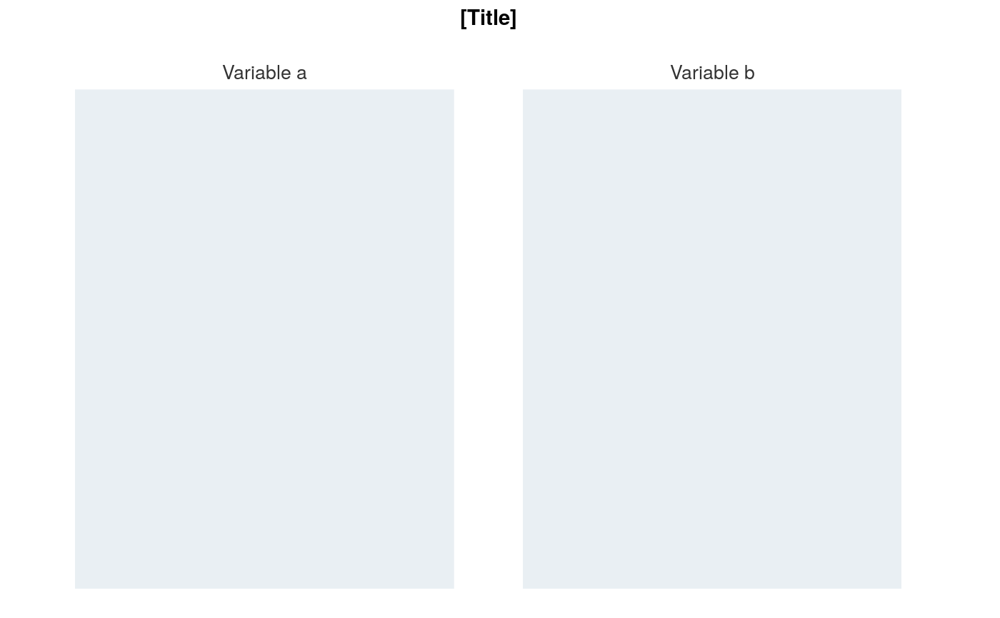

Map of an array in ggplot that is facetted, but not coloured.
ggplot_stars_facet(data, pal = NULL, coastline = NULL, coastline_behind = FALSE, coastline_pal = "black", facet_nrow = NULL, title = "[Title]", subtitle = NULL, caption = "", font_family = "Helvetica", font_size_title = 11, font_size_body = 10, wrap_title = 75, wrap_subtitle = 80, wrap_caption = 80, isMobile = FALSE)
| data | A stars object with 2 dimensions, x and y, and multiple named attribute layers with usual convention of lower case and underscores. Required input. |
|---|---|
| pal | Character vector of hex codes, or provided objects with pal_ prefixes. |
| coastline | Add a sf object as a coastline (or administrative boundaries). Defaults to NULL. Use nz (or nz_region) to add a new zealand coastline. Or add a custom sf object. |
| coastline_behind | TRUE or FALSE as to whether the coastline is to be behind the stars object defined in the data argument. Defaults to FALSE. |
| coastline_pal | Colour of the coastline. Defaults to "#7F7F7F". |
| facet_nrow | The number of rows of facetted plots. Not applicable to where isMobile is TRUE. |
| title | Title string. Defaults to "[Title]". |
| subtitle | Subtitle string. Defaults to "[Subtitle]". |
| caption | Caption title string. Defaults to NULL. |
| font_family | Font family to use. Defaults to "Helvetica". |
| font_size_title | Font size for the title text. Defaults to 11. |
| font_size_body | Font size for all text other than the title. Defaults to 10. |
| wrap_title | Number of characters to wrap the title to. Defaults to 75. Not applicable where isMobile equals TRUE. |
| wrap_subtitle | Number of characters to wrap the subtitle to. Defaults to 80. Not applicable where isMobile equals TRUE. |
| wrap_caption | Number of characters to wrap the caption to. Defaults to 80. Not applicable where isMobile equals TRUE. |
| isMobile | Whether the plot is to be displayed on a mobile device. Defaults to FALSE. In a shinyapp, isMobile should be specified as input$isMobile. TRUEhis enable mobile compatible apps, where apps have ui mobileDetect function defined and mobile.js file in www/js/ folder https://g3rv4.com/2017/08/shiny-detect-mobile-browsers |
A ggplot object.
map_data1 <- example_stars_nz_no3n %>% rlang::set_names("nitrate_nitrogen") map_data2 <- example_stars_nz_drp %>% rlang::set_names("dissolved_reactive_phosphorus") map_data <- c(map_data1, map_data2) ggplot_stars_facet(data = map_data, coastline = nz)